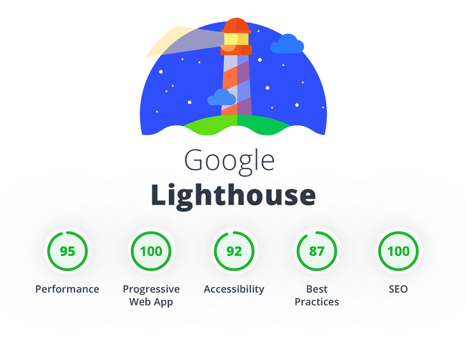
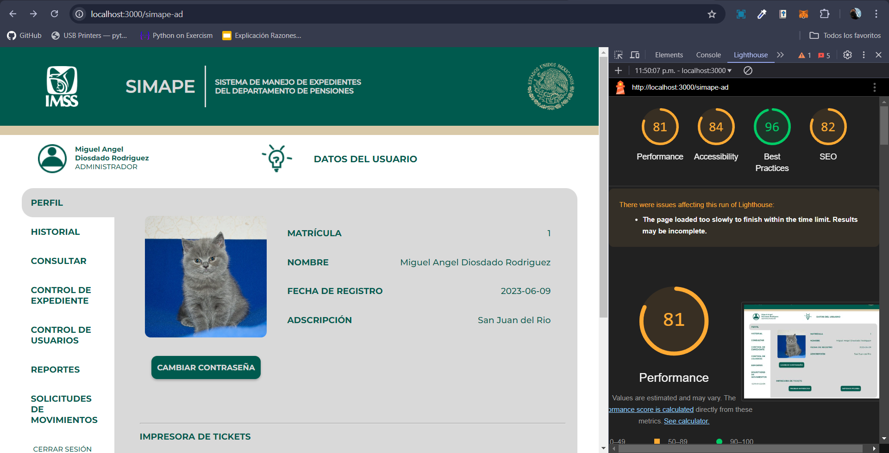

Métricas
Escrito por: Miguel Ángel Diosdado Rodríguez y Fernanda Montserrat Hernández ÁvilaFecha: 23 de octubre de 2024
¿Qué es lighthouse?
Lighthouse es una herramienta de código abierto desarrollada por Google que permite auditar el rendimiento, accesibilidad, buenas prácticas y SEO de una página web.
Resultado de la auditoría
En la siguiente imagen se muestra el resultado de la auditoría de Lighthouse realizada a la página web del proyecto SIMAPE.
Observaciones
En la auditoría de Lighthouse se observa que la página web del proyecto SIMAPE tiene:
- Un rendimiento de 81/100
- Una accesibilidad de 84/100
- Una buenas prácticas de 96/100
- Un SEO de 82/100
Rendimiento
Se observa que la página web tiene un rendimiento aceptable, sin embargo, se puede mejorar la velocidad de carga y la interactividad.
Accesibilidad
Se observa que la página web tiene una buena accesibilidad, sin embargo, se pueden mejorar algunos aspectos como el contraste de colores y el uso de etiquetas alt en las imágenes.
Buenas prácticas
Se observa que la página web cumple con las buenas prácticas recomendadas, sin embargo, se pueden mejorar algunos aspectos como el uso de etiquetas meta en el head y la optimización de las imágenes.
SEO
Se observa que la página web tiene un buen SEO, sin embargo, se pueden mejorar algunos aspectos como el uso de etiquetas meta en el head y la optimización de las imágenes.
¿Cómo mejorar?
Para mejorar la accesibilidad y el SEO de la página web, se pueden seguir las siguientes recomendaciones:
- Optimizar las imágenes para reducir su tamaño y mejorar el rendimiento de la página.
- Agregar texto alternativo a las imágenes para mejorar la accesibilidad.
- Mejorar la estructura de la página web para facilitar la navegación y mejorar el SEO.
Conclusiones
En conclusión, la auditoría de Lighthouse es una herramienta muy útil para medir el rendimiento de una página web y detectar posibles problemas en la misma.
En este caso, el software SIMAPE tiene una calificación aceptable, que aunque puede ser mejorable teniendo mejores prácticas como optimizar las fuentes o imágenes, hacer renderizados condicionales, utilizar frameworks que permitan la componetización de la interfaz, y mejorar agregando etiquetas de texto alternativo a las imagenes, realmente la página tiene un buen desempeño.